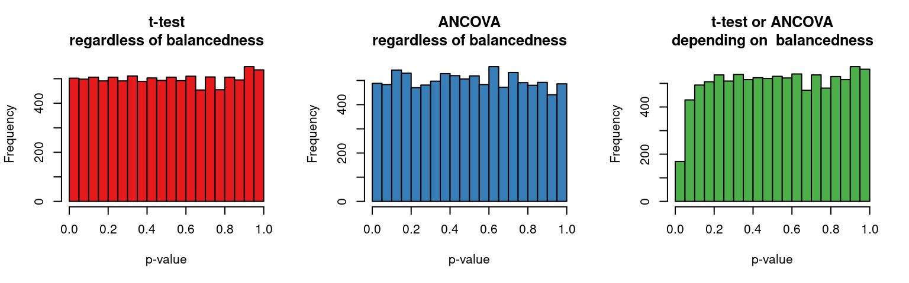
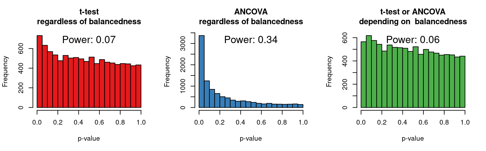

Silly significance tests: Balance tests
It’s something of a pet peeve of mine that your average research paper contains way too many statistical tests. I’m all in favour of reporting research and analyses meticulously, but it’d make our papers easier to read – and ultimately more impactful – if we were to cut down on silly, superfluous significance tests. Under scrutiny today: balance tests.
The term ‘silly significance test’ in the title comes from Abelson’s Statistics as principled argument and refers to tests that don’t contribute anything to a research report other than making it harder to read. I’d distinguish at least four kinds of ‘silly tests’ that we can largely do without – in this post, I focus on balance tests in randomised experiments.
What are balance tests?
Balance tests, also called randomisation checks, are a ubiquitous type of significance test. As an example of a balance test, consider a researcher who wants to compare a new vocabulary learning method to an established one. She randomly assigns forty participants to either the control group (established method) or the experimental group (new method). After four weeks, she tests the participants’ vocabulary knowledge – and let’s pretend she finds a significant difference in favour of the experimental group (e.g. t(38) = 2.7, p = 0.01).
To pre-empt criticisms that the difference between the two groups could be due to factors other than the learning method, the conscientious research also runs a t-test to verify that the control and experimental group don’t differ significantly in terms of age as well as a Χ²-test to check whether the proportion of men and women in approximately the same in both groups. The goal of these tests is to enable the researcher to argue that the randomisation gave rise to groups that are balanced with respect to these variables and that the observed difference between the two groups therefore can’t be due to these possible confounds. If a balance test comes out significant, the researcher could be tempted to run another analysis with the possible confound as a covariate.
Why are they superfluous?
Reasonable though this strategy may appear to be, balance tests are problematic in several respects. The following list is based on a paper by Mutz and Pemantle (2013). This discussion gives you the short version; for a somewhat more detailed treatment of balanced tests geared towards applied linguists, see the first section of my (as yet unpublished) paper on analysing randomised controlled interventions.
Update (2023-08-26): The Mutz and Pemantle paper has now been published as Mutz, Pemantle and Pham (2019). My own paper has now been published as Vanhove (2015).
Balance tests are uninformative…
Statistical tests are used to draw inferences about a population rather than about a specific sample. Sure, it’s possible to end up with 3 men in the experimental group and 14 in the control group; a Χ²-test would then produce a significance result. But would we seriously go on to argue that men are more likely to end up in the control group than in the experimental group? Of course not! We know men were equally likely to end up in the control or experimental group because we randomly assigned all participants to the conditions – we know the null hypothesis (no difference between the groups) is true with respect to this variable. Consequently, every significant balance test is a false alarm that has come about due to sheer randomness. A balance test can’t tell us anything we don’t know already.
… as well as unnecessary…
Researchers that concede the first point may go on to argue that their use of balance tests isn’t intended to make inferences about populations, but to give an idea about the magnitude of the unbalancedness between the groups. However, perfectly balanced groups are not a prerequisite for making valid statistical inferences. Thus, balance tests are also unnecessary.
To elaborate on this point, randomisation guarantees that all possible confounds – both the ones we had and those we hadn’t thought of – are balanced out on average, i.e. in the infamous long run. A given randomisation may give rise to an experimental group that is older or that has more women, or has a higher proportion of MasterChef fans – and, yes, unbalancedness with respect to such variables could conceivably give rise to a larger or smaller observed treatment effect in any given study. But the distribution of such fluke findings follows the laws of probability. The p-value for the main analysis already takes such flukes into account and doesn’t need to be ‘corrected’ for an unbalanced distribution of possible confounding variables.
… and they invalidate significance tests.
Since p-values have their precise meaning when no balance test is carried out, it follows that they don’t have their precise meaning when a balanced test is carried out. p-values are conditional probability statements (‘the probability of observing data at least this extreme if the null hypothesis were true’), but by using balance tests, we add a condition to this statement: ‘the probability of observing data at least this extreme if the null hypothesis were true and if the balance test yields a particular result’. This doesn’t seem like much, but it is a form of data-dependent analysis, which invalidates significance tests. (For a more general discussion of data-dependent analyses, see Gelman & Loken 2013.)
A demonstration of this point seems in order. I ran a small simulation (R code below) of the following scenario. We want to test an experimental effect and randomly assign 40 participants to an experimental or a control condition. The participants vary in age between 20 and 40. The age variable doesn’t interest us so much, but it is linearly related to the outcome variable. However, the treatment effect is 0, i.e. the null hypothesis is true. Our analytical strategy is as follows: We run a significance test on the age variable to see whether the experimental and control groups are ‘balanced’ in terms of age. If this test comes back non-significant, we conclude that we have balanced groups and run a t-test on the outcome variable; if the test comes back significant, we run an ANCOVA with age as a covariate. I simulated this scenario 10,000 times and compared the distribution of the p-values for the treatment effect resulting from this ‘conditional’ analytical strategy with those provided by t-tests and ANCOVAs that were run regardless of the outcome of the balance test. The histograms below show the distributions of p-values for these three testing strategies.
Since the null hypothesis is true in this case, the distribution of p-values should be uniform, i.e. all bars should be roughly equally as high. This is the case in the left and middle histograms, showing that p-values are correctly distributed when the analysis is not affected by balance tests. Put simply, p-values have their intended meaning in these cases. The right histogram shows that low p-values are too rare when the analysis is affected by balance tests: the test of the treatment effect is too conservative, i.e. its p-value doesn’t have its intended meaning.
Recent blogs and articles have highlighted the fact that data-dependent analysis yields anti-conservative p-values, i.e. that it is too likely to observe a significant effect where none exists (e.g. Gelman & Loken 2013 and Simmons et al. 2011). It may therefore seem strange to highlight that data-dependent analysis can produce overconservative results, too. My main point, however, is that balance tests produce inaccurate results that can easily be avoided – regardless of the direction of the error. That said, overconservatism has a practical downside as well, namely lower power: it’s less likely to observe a statistically significant effect when the effect does in fact exist. The following histograms show the p-value distribution when there is a relatively small effect (see also R code below).

Clearly, the ANCOVA-only strategy wins hands-down in terms of power, whereas the balance test strategy doesn’t even compare favourably to the t-test-only approach.
Solutions
The solution to simple: just don’t use balance tests. They clutter up the research report and don’t have any obvious advantages when analysing randomised experiments. When there are good reasons to assume that a covariate affects the results, it’s a good idea to include it in the main analysis regardless of whether the experimental and control groups are balanced with respect to this variable. In fact, Mutz and Pemantle (2013) show that including a covariate in the analysis is slightly more effective when the groups are in fact balanced. (Update (2023-08-26): See Mutz et al. (2019) for the published paper.) While this post is strictly on randomised experiments, I would think that this is also the most sensible strategy when analysing non-randomised quasi-experiments.
Alternatively, it can make sense to consider the covariate in the design of the study, i.e. before randomising (see the part in my analysis paper on ‘blocking’, pp. 6-7). (Update (2023-08-26): See Vanhove (2015) for the published paper.)
R code
simulate.balance <- function(effect = 0, covar.effect = 0) {
age <- seq(from = 20, to = 40, length.out = 40)
condition <- sample(c(rep(0, 20), rep(1, 20)), replace = FALSE)
var <- covar.effect*age + effect*condition + rnorm(40, sd=2)
# t-test regardless of balancedness
test1 <- t.test(var ~ factor(condition), var.equal = TRUE)$p.value
# balance test
check <- t.test(age ~ factor(condition), var.equal = TRUE)$p.value
# conditional analysis
if (check <= 0.05) {
test2 <- anova(lm(var ~ age + factor(condition)))$'Pr(>F)'[2]
} else {
test2 <- test1
}
# ancova regardless of balancedness
test3 <- anova(lm(var ~ age + factor(condition)))$'Pr(>F)'[2]
return(list(test1 = test1,
test2 = test2,
test3 = test3,
check = check))
}
sims <- replicate(10000, simulate.balance(effect = 0, covar.effect = 1))Settings for histograms above: effect = 0 and effect = 1.
Software versions
devtools::session_info()─ Session info ───────────────────────────────────────────────────────────────
setting value
version R version 4.3.1 (2023-06-16)
os Ubuntu 22.04.3 LTS
system x86_64, linux-gnu
ui X11
language en_US
collate en_US.UTF-8
ctype en_US.UTF-8
tz Europe/Zurich
date 2023-08-26
pandoc 3.1.1 @ /usr/lib/rstudio/resources/app/bin/quarto/bin/tools/ (via rmarkdown)
─ Packages ───────────────────────────────────────────────────────────────────
package * version date (UTC) lib source
cachem 1.0.6 2021-08-19 [2] CRAN (R 4.2.0)
callr 3.7.3 2022-11-02 [1] CRAN (R 4.3.1)
cli 3.6.1 2023-03-23 [1] CRAN (R 4.3.0)
codetools 0.2-19 2023-02-01 [4] CRAN (R 4.2.2)
crayon 1.5.2 2022-09-29 [1] CRAN (R 4.3.1)
devtools 2.4.5 2022-10-11 [1] CRAN (R 4.3.1)
digest 0.6.29 2021-12-01 [2] CRAN (R 4.2.0)
ellipsis 0.3.2 2021-04-29 [2] CRAN (R 4.2.0)
evaluate 0.15 2022-02-18 [2] CRAN (R 4.2.0)
fastmap 1.1.0 2021-01-25 [2] CRAN (R 4.2.0)
fs 1.5.2 2021-12-08 [2] CRAN (R 4.2.0)
glue 1.6.2 2022-02-24 [2] CRAN (R 4.2.0)
htmltools 0.5.5 2023-03-23 [1] CRAN (R 4.3.0)
htmlwidgets 1.6.2 2023-03-17 [1] CRAN (R 4.3.1)
httpuv 1.6.11 2023-05-11 [1] CRAN (R 4.3.1)
jsonlite 1.8.7 2023-06-29 [1] CRAN (R 4.3.1)
knitr 1.39 2022-04-26 [2] CRAN (R 4.2.0)
later 1.3.1 2023-05-02 [1] CRAN (R 4.3.1)
lifecycle 1.0.3 2022-10-07 [1] CRAN (R 4.3.0)
magrittr 2.0.3 2022-03-30 [1] CRAN (R 4.3.0)
memoise 2.0.1 2021-11-26 [2] CRAN (R 4.2.0)
mime 0.10 2021-02-13 [2] CRAN (R 4.0.2)
miniUI 0.1.1.1 2018-05-18 [1] CRAN (R 4.3.1)
pkgbuild 1.4.2 2023-06-26 [1] CRAN (R 4.3.1)
pkgload 1.3.2.1 2023-07-08 [1] CRAN (R 4.3.1)
prettyunits 1.1.1 2020-01-24 [2] CRAN (R 4.2.0)
processx 3.8.2 2023-06-30 [1] CRAN (R 4.3.1)
profvis 0.3.8 2023-05-02 [1] CRAN (R 4.3.1)
promises 1.2.0.1 2021-02-11 [1] CRAN (R 4.3.1)
ps 1.7.5 2023-04-18 [1] CRAN (R 4.3.1)
purrr 1.0.1 2023-01-10 [1] CRAN (R 4.3.0)
R6 2.5.1 2021-08-19 [2] CRAN (R 4.2.0)
Rcpp 1.0.11 2023-07-06 [1] CRAN (R 4.3.1)
remotes 2.4.2 2021-11-30 [2] CRAN (R 4.2.0)
rlang 1.1.1 2023-04-28 [1] CRAN (R 4.3.0)
rmarkdown 2.21 2023-03-26 [1] CRAN (R 4.3.0)
rstudioapi 0.14 2022-08-22 [1] CRAN (R 4.3.0)
sessioninfo 1.2.2 2021-12-06 [2] CRAN (R 4.2.0)
shiny 1.7.4.1 2023-07-06 [1] CRAN (R 4.3.1)
stringi 1.7.12 2023-01-11 [1] CRAN (R 4.3.1)
stringr 1.5.0 2022-12-02 [1] CRAN (R 4.3.0)
urlchecker 1.0.1 2021-11-30 [1] CRAN (R 4.3.1)
usethis 2.2.2 2023-07-06 [1] CRAN (R 4.3.1)
vctrs 0.6.3 2023-06-14 [1] CRAN (R 4.3.0)
xfun 0.39 2023-04-20 [1] CRAN (R 4.3.0)
xtable 1.8-4 2019-04-21 [1] CRAN (R 4.3.1)
yaml 2.3.5 2022-02-21 [2] CRAN (R 4.2.0)
[1] /home/jan/R/x86_64-pc-linux-gnu-library/4.3
[2] /usr/local/lib/R/site-library
[3] /usr/lib/R/site-library
[4] /usr/lib/R/library
──────────────────────────────────────────────────────────────────────────────